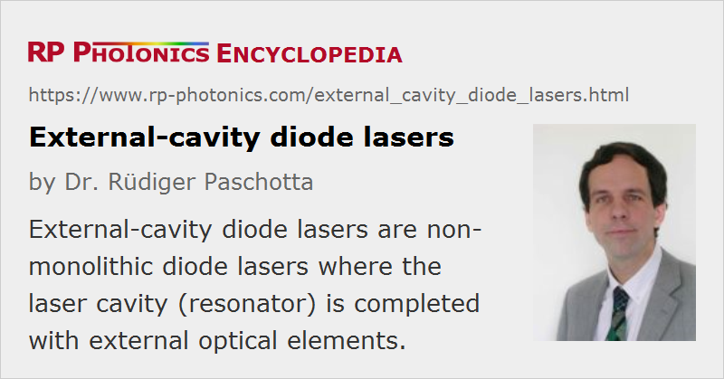

External-cavity Diode Lasers
Acronym: ECDL
Definition: non-monolithic diode lasers where the laser cavity (resonator) is completed with external optical elements
More general term: diode lasers
German: Diodenlaser mit externem Resonator
Categories: optoelectronics, lasers
How to cite the article; suggest additional literature
Author: Dr. Rüdiger Paschotta
An external-cavity diode laser is a diode laser based on a laser diode chip which typically has one end anti-reflection coated, and the laser resonator is completed with, e.g., a collimating lens (or separate fast-axis and slow-axis beam collimators) and an external mirror as shown in Figure 1.
Another type of external-cavity laser uses a resonator based on an optical fiber rather than on free-space optics. Narrowband optical feedback can then come from a fiber Bragg grating.
The external laser resonator introduces various new features and options:
- Comparing with a standard laser diode, the longer resonator increases the damping time of the intracavity light and thus allows for lower phase noise and a smaller emission linewidth (in single-frequency operation). An intracavity filter such as the diffraction grating can further reduce the linewidth. Typical linewidths of external-cavity diode lasers are below 1 MHz.
- An optical bandpass filter can be used to determine the emission wavelength and reduce the emission linewidth. For example, one can use a diffraction grating or a volume Bragg grating (VBG, also called VHG = volume holographic grating) to obtain a fixed-wavelength narrow-linewidth laser.
- Wavelength tuning is possible by including some adjustable optical bandpass filter as tuning element. Most often, a diffraction grating is used for this purpose. (For details, see below.) Another possibility is to use a wavelength selector with a somewhat larger bandwidth and tune the emission wavelength within its range e.g. by varying the drive current of the laser diode.
- The external resonator also adds important features for mode locking (see below).
External-cavity diode lasers can be made with very compact setups. Depending on the additional optical elements required, it is often possible to make miniature lasers of that type.
Note that there are external-cavity semiconductor lasers which are not diode lasers: optically pumped vertical external-cavity surface-emitting lasers (VECSELs).
Tunable External-cavity Diode Lasers
Tunable external-cavity diode lasers (→ tunable lasers) usually use a diffraction grating as the wavelength-selective element in the external resonator. They are also called grating-stabilized diode lasers.
The common Littrow configuration (see Figure 2a) contains a collimating lens and a diffraction grating as the end mirror. The first-order diffracted beam provides optical feedback to the laser diode chip, which has an anti-reflection coating on the right-hand side. The emission wavelength can be tuned by rotating the diffraction grating. A disadvantage is that this also changes the direction of the output beam, which is inconvenient for many applications.
In the Littman–Metcalf configuration ([3], Figure 2b), the grating orientation is fixed, and an additional mirror is used to reflect the first-order beam back to the laser diode. The wavelength can be tuned by rotating that mirror. This configuration offers a fixed direction of the output beam, and also tends to exhibit a smaller linewidth, as the wavelength selectivity is stronger. (The wavelength-dependent diffraction occurs twice instead of once per resonator round trip.) A disadvantage is that the zero-order reflection of the beam reflected by the tuning mirror is lost, so that the output power is lower than that for a Littrow laser.
Competing types of tunable lasers are DBR laser diodes and small fiber lasers.
Mode-locked External-cavity Diode Lasers
In the context of mode locking (→ mode-locked diode lasers), external-cavity diode lasers have various interesting properties:
- Additional optical elements, such as a saturable absorber for passive mode locking or an optical filter, can be inserted in the laser resonator.
- The longer laser resonator allows for lower pulse repetition rates (although still usually above 1 GHz), and also for tuning the repetition rate by changing the resonator length.
- Even for high repetition rates of tens of gigahertz, external-cavity lasers, then operated with harmonic mode locking, can be interesting, because they exhibit lower laser noise, e.g. in the form of timing jitter.
More details are found in the article on mode-locked diode lasers.
Mode-locked external-cavity diode lasers sometimes compete with mode-locked fiber lasers. They do not reach their potential for clean pulses and high output power, but are much more compact and cheaper to manufacturer.
Applications
Mode-locked ECDLs are mostly used in data transmitters for optical communications. Tunable devices find applications in areas such as laser absorption spectroscopy of trace gases.
Suppliers
The RP Photonics Buyer's Guide contains 20 suppliers for external-cavity diode lasers. Among them:
Questions and Comments from Users
Here you can submit questions and comments. As far as they get accepted by the author, they will appear above this paragraph together with the author’s answer. The author will decide on acceptance based on certain criteria. Essentially, the issue must be of sufficiently broad interest.
Please do not enter personal data here; we would otherwise delete it soon. (See also our privacy declaration.) If you wish to receive personal feedback or consultancy from the author, please contact him e.g. via e-mail.
By submitting the information, you give your consent to the potential publication of your inputs on our website according to our rules. (If you later retract your consent, we will delete those inputs.) As your inputs are first reviewed by the author, they may be published with some delay.
Bibliography
| [1] | H. Edmonds and A. Smith, “Second-harmonic generation with the GaAs laser”, IEEE J. Quantum Electron. 6 (6), 356 (1970), doi:10.1109/JQE.1970.1076460 |
| [2] | M. G. Littman and H. J. Metcalf, “Spectrally narrow pulsed dye laser without beam expander”, Appl. Opt. 17 (14), 2224 (1978), doi:10.1364/AO.17.002224 |
| [3] | K. Liu and M. G. Littman, “Novel geometry for single-mode scanning of tunable lasers”, Opt. Lett. 6 (3), 117 (1981), doi:10.1364/OL.6.000117 |
| [4] | M. Fleming and A. Mooradian, “Spectral characteristics of external-cavity controlled semiconductor lasers”, IEEE J. Quantum Electron. 17 (1), 44 (1981), doi:10.1109/JQE.1981.1070634 |
| [5] | C. J. Hawthorn et al., “Littrow configuration tunable external cavity diode laser with fixed direction output beam”, Rev. Sci. Instrum. 72 (12), 4477 (2001), doi:10.1063/1.1419217 |
| [6] | P. Zorabedian, “Tunable external-cavity semiconductor lasers”, in F. J. Duarte (ed.), Tunable Lasers, p. 349 (Academic Press, London, 1995) |
See also: diode lasers, laser diodes, mode-locked diode lasers, semiconductor lasers, wavelength tuning, linewidth, mode-locked lasers, distributed Bragg reflector lasers, vertical external-cavity surface-emitting lasers
and other articles in the categories optoelectronics, lasers
|  |
If you like this page, please share the link with your friends and colleagues, e.g. via social media:
These sharing buttons are implemented in a privacy-friendly way!